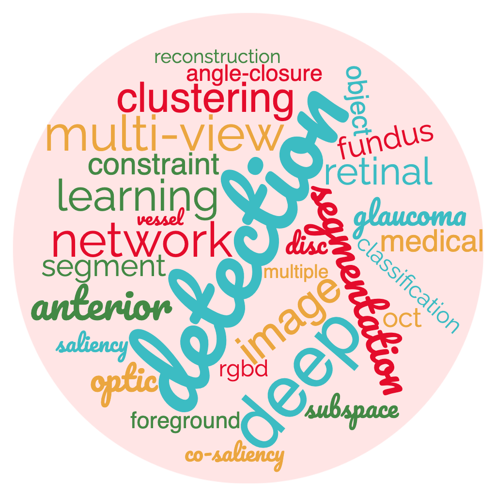

Huazhu FU (付华柱)
Senior Scientist
|
 |
I am a senior scientist in IHPC, A*STAR. I received my Ph.D. from Tianjin University in 2013. Previously, I were a Research Fellow (2013-2015) in Nanyang Technological University (NTU), Singapore, a Research Scientist (2015-2018) in Institute for Infocomm Research (I2R), A*STAR, Singapore, and a Senior Scientist (2018-2021) in Inception Institute of Artificial Intelligence (IIAI), UAE.
My research focuses on:
Recent News:
Call for Papers: 9th MICCAI Workshop on "Ophthalmic Medical Image Analysis" (OMIA9), 2022. [link]Call for Papers: 1st MICCAI Workshop on "Resource-Efficient Medical Image Analysis" (REMIA), 2022. [link]Call for Papers: A Collection of Scientific Reports on "Machine learning applications in medical image analysis", submission deadline: 30 November 2022. [link]- [05/2022] One "Multi-Modal MR Reconstruction" paper is accepted by IEEE TMI.
- [05/2022] One "Fundus Lesion Segmentation" paper is accepted by IEEE TMI.
- [05/2022] One "Cataract classification using AS-OCT image" paper is accepted by MedIA.
- [05/2022] Serve as Technical Program Committee member of IEEE BHI 2022.
- [04/2022] Our "ADAM Challenge" summary paper is accepted by IEEE TMI.
- [04/2022] One paper for "Trustworthy Multi-view Classification" is accepted by IEEE TPAMI.
- [03/2022] Serve as an Area Chair of IEEE ICIP 2022.
- [03/2022] Four papers are accepted by CVPR 2022.
- [02/2022] Happy to organize two workshops on MICCAI 2022: the 9th MICCAI Workshop on Ophthalmic Medical Image Analysis (OMIA9), and the 1st Workshop on Resource-Efficient Medical Image Analysis (REMIA).
- [01/2022] One paper for "Cataractous Fundus Restoration" is accepted by IEEE TMI.
- [01/2022] One paper for "Motion Segmentation" is accepted by IEEE TPAMI.
- [01/2022] Serve as an Area Chair of MICCAI 2022.
- ------ Happy New Year! --------
- [12/2021] One paper for "RGB-D saliency detection" is accepted by IEEE TIP.
- [11/2021] Serve as an Area Chair of MIDL 2022.
- [11/2021] Happy to be a member of the IEEE Bio Imaging and Signal Processing Technical Committee (BISP TC).
- [09/2021] One paper for "Anomaly Detection in Medical Image" is accepted by IEEE TMI.
- [09/2021] One paper for "Trustworthy Multimodal Regression" is accepted by NeurIPS 2021.
- [09/2021] One paper for "Angle-closure Assessment in AS-OCT" is accepted by IEEE TMI.
- [08/2021] One paper for "Subspace Clustering" is accepted by IEEE TNNLS.
- [07/2021] One paper for "Medical Image Enhancement" is accepted by IEEE TMI.
- [07/2021] Four papers are accepted by ICCV 2021.
- [07/2021] Happy to receive the
Best Paper Award of IEEE ICME 2021! [Link] - [07/2021] One paper for "Image Dehazing" is accepted by ACM MM 2021.
- [06/2021] Five papers is accepted by MICCAI 2021.
- [06/2021] One paper for "MR Image Reconstruction" is accepted by IEEE TNNLS.
- [03/2021] Two papers ("Co-saliency Detection" and "Video shadow Detection") are accepted by CVPR 2021.
- [02/2021] One paper for "Co-saliency Detection" is accepted by IEEE TPAMI.
- [01/2021] One paper for "Breast Lesion Segmentation" is accepted by MedIA.
- [01/2021] One paper for "Fundus Image Analysis Survey" is accepted by MedIA.
- [01/2021] One paper for "Uncertainty Estimation in Multi-view Learning" is accepted by ICLR 2021.
- [01/2021] One paper for "Saliency Detection Survey" is accepted by IEEE TPAMI.
Professional Activities:
- Memberships:
- IEEE Senior Member.
- Member of the IEEE Bio Imaging and Signal Processing Technical Committee (BISP TC).
- Associate Editor:
- IEEE Transactions on Medical Imaging, (2020 - present).
- IEEE Journal of Biomedical and Health Informatics, (2020 - present).
- Scientific Reports, (2021 - present).
- IEEE Access, (2018 - present).
- Guest Editor:
- Area Chair/Senior-PC:
- MICCAI (2021, 2022), IJCAI (2021), ACM MM Asia (2021), AAAI (2022), MIDL (2022), ICIP (2022), BHI (2022).
- Challenge Organizer:
- "GOALS: Glaucoma Oct Analysis and Layer Segmentation" with the MICCAI 2022. [Link]
- "GAMMA: Glaucoma Grading from Multi-Modality Images Challenge" with the MICCAI 2021. [Link] [Summary Paper]
- "REFUGE2: 2nd Retinal Fundus Glaucoma Challenge" with the MICCAI 2020. [Link] [Summary Paper]
- "ADAM: Automatic Detection challenge on Age-related Macular degeneration" with the ISBI 2020. [Link] [Summary Paper]
- "AGE: Angle closure Glaucoma Evaluation Challenge" with the MICCAI 2019. [Link] [Summary Paper]
- "PALM: PathologicAL Myopia detection from retinal images" with the ISBI 2019. [Link]
- "REFUGE: Retinal Fundus Glaucoma Challenge" with the MICCAI 2018. [Link] [Summary Paper]
- Workshop Chair:
Highlighted Publications:
See more publications in: [More..] / [Google Scholar]- "Transformers in Medical Imaging: A Survey",
Fahad Shamshad, Salman Khan, Syed Waqas Zamir, Muhammad Haris Khan, Munawar Hayat, Fahad Shahbaz Khan, and Huazhu Fu
arXiv, arXiv:2201.09873. [Project] - "Consistency and Diversity induced Human Motion Segmentation",
Tao Zhou, Huazhu Fu, Chen Gong, Ling Shao, Fatih Porikli, Haibin Ling, and Jianbing Shen,
IEEE TPAMI, in press. - "Trusted Multi-View Classification with Dynamic Evidential Fusion",
Zongbo Han, Changqing Zhang, Huazhu Fu, and Joey Tianyi Zhou,
IEEE TPAMI, in press. [Code] - "Re-thinking Co-Salient Object Detection",
Deng-Ping Fan, Tengpeng Li, Zheng Lin, Ge-Peng Ji, Dingwen Zhang, Ming-Ming Cheng, Huazhu Fu, and Jianbing Shen,
IEEE TPAMI, in press. [Chinese version] [Project] [Code] - "Salient Object Detection in the Deep Learning Era: An In-Depth Survey",
Wenguan Wang, Qiuxia Lai, Huazhu Fu, Jianbing Shen, Haibin Ling, and Ruigang Yang,
IEEE TPAMI, 2022. [Project] - "Deep Partial Multi-View Learning",
Changqing Zhang, Yajie Cui, Zongbo Han, Joey Tianyi Zhou, Huazhu Fu, and Qinghua Hu,
IEEE TPAMI, 2022. [Code] - "Modeling and Enhancing Low-quality Retinal Fundus Images",
Ziyi Shen, Huazhu Fu, Jianbing Shen, and Ling Shao,
IEEE TMI, 2021. [Code] [EyeQ Dataset] - "Applications of Deep Learning in Fundus Images: A Review",
Tao Li, Wang Bo, Chunyu Hu, Hong Kang, Hanruo Liu, Kai Wang, and Huazhu Fu,
MedIA, 2021. [Project] - "Generalized Latent Multi-view Subspace Clustering",
Changqing Zhang, Huazhu Fu, Qinghua Hu, Xiaochun Cao, Yuan Xie, Dacheng Tao, and Dong Xu,
IEEE TPAMI, 2020. [Code] [Data] (ESI Highly Cited Paper ) - "Inf-Net: Automatic COVID-19 Lung Infection Segmentation from CT Images",
Deng-Ping Fan, Tao Zhou, Ge-Peng Ji, Yi Zhou, Geng Chen, Huazhu Fu, Jianbing Shen, and Ling Shao,
IEEE TMI, 2020. [Code] (ESI Highly Cited Paper ) - "REFUGE Challenge: A Unified Framework for Evaluating Automated Methods for Glaucoma
Assessment from
Fundus Photographs",
José Ignacio Orlando, Huazhu Fu, João Barbossa Breda, and et.al.,
MedIA, 2020. [Challenge Link] (ESI Highly Cited Paper ) - "CE-Net: Context Encoder Network for 2D Medical Image Segmentation",
Zaiwang Gu, Jun Cheng, Huazhu Fu, Kang Zhou, Huaying Hao, Yitian Zhao, Tianyang Zhang, Shenghua Gao, and Jiang Liu,
IEEE TMI, 2019. [Code] (ESI Highly Cited Paper ) - "Joint Optic Disc and Cup Segmentation Based on Multi-label Deep Network and Polar
Transformation",
Huazhu Fu, Jun Cheng, Yanwu Xu, Damon Wing Kee Wong, Jiang Liu, and Xiaochun Cao,
IEEE TMI, 2018. [Code] (ESI Highly Cited Paper ) - "Cluster-based Co-saliency Detection",
Huazhu Fu, Xiaochun Cao, and Zhuowen Tu,
IEEE TIP, 2013. [Code] (ESI Highly Cited Paper )
Awards/Honors:
-
Best Paper Award in IEEE International Conference on Multimedia & Expo (ICME) 2021. - Selected in Stanford University List of Top 2% Scientists Worldwide in 2021.
- Finalist of the Young Scientist Publication Impact Award in MICCAI 2021.
- Most Influential Paper (Application) Award in Jittor Developer Conference 2021.
- IEEE TMI Distinguished Reviewer Gold Level, 2021.
- Outstanding Reviewer in CVPR 2021.
- China Computer Federation (CCF) Outstanding Dissertation Nomination in 2014.